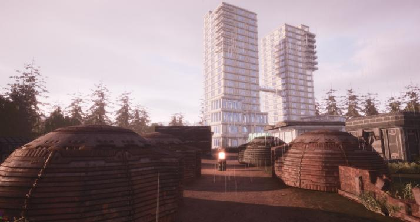

Building is one of the core features of GearStorm. There are a wide variety of things you can build with from
the building materials, including: battlements, bridges, doors, garages, lights, walls, and more.You can build
a humble base or a massive city ino GearStorm:
